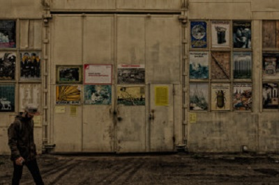

У Києві пройде 10-й Міжнародний Архітектурний Фестиваль CANactions
У Києві 2-3 червня у Мистецькому Арсеналі пройде Міжнародний архітектурний фестиваль CANactions. Тема ювілейного фестивалю – ЦІННОСТІ. Спеціальні гості фестивалю – провідні світові архітектори Мартін Рейн-Кано та Ганс Ван дер Хайден проведуть лекції для широкої аудиторії
Міжнародний Архітектурний Фестиваль CANactions – найбільша архітектурна подія в Україні, створена у 2008 році, учасниками якої за десять років роботи стали 120 спікерів та більш ніж 36 000 відвідувачів з усього світу. Мета ювілейного 10-го фестивалю – обговорити цінності в площині архітектури, урбанізму, а також – житті загалом. Команда CANactions прагне створити умови для обміну ідеями та діалогу в площині сучасної архітектури.
Протягом фестивалю гості матимуть змогу відвідати виставки та презентації молодих архітекторів, взяти участь у дискусіях та майстер-класах. Також на події буде створений окремий креативний дитячий майданчик. Про свою участь у фестивалі вже заявили Мартін Рейн-Кано – засновник TOPOTEK 1 (Берлін, Німеччина), який у 2013 році отримав золоту медаль від Міжнародного Олімпійського комітету за проект Superkilen у Копенгагені, а також Ганс Ван дер Хайден – засновник Hans van der Heijden Architect (Амстердам, Нідерланди), автор книг та есе з урбан дизайну, викладач Кембріджського університету. Вони проведуть лекції на головній сцені фестивалю для усіх відвідувачів.
Організатори події CANactions – освітня платформа, яка сприяє створенню в Україні місць та спільнот, де люди будуть задоволено жити та працювати. Співорганізатором 10-го Міжнародного архітектурного фестивалю є Національний культурно-мистецький та музейний комплекс «Мистецький Арсенал». Партнерами фестивалю є Future Architecture Platform, Посольство Швейцарії в Україні, Посольство Королівства Нідерландів, Посольство Королівства Данія, Посольство Литовської Республіки в Україні, Італійський Інститут Культури в Україні, Польський Інститут в Києві.